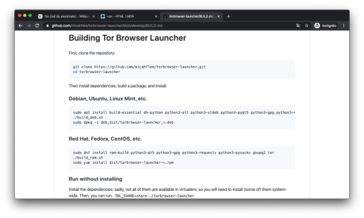
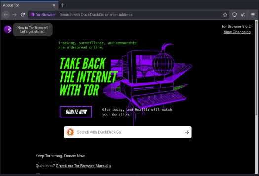

Navegar en TOR con GNU/Linux
El contenido de este artículo tiene como propósito compartir información para fines educativos.
28 December 2019
DISCLAIMER: El contenido de este artículo tiene como propósito compartir información para fines educativos. No me hago responsable de cualquier acto ilícito realizado con la información siguiente. No vulneres sistemas ajenos a los tuyos. El conocimiento es libre.
La forma de navegar de forma "segura" con el navegador Tor Pero antes de empezar ¿qué es Tor? Según nuestra fiel amiga Wikipedia:
"Tor es la sigla de The Onion Router (en español: El Rúter Cebolla). Es un proyecto cuyo objetivo principal es el desarrollo de una red de comunicaciones distribuida de baja latencia y superpuesta sobre internet, en la que el encaminamiento de los mensajes intercambiados entre los usuarios no revela su identidad, es decir, su dirección IP (anonimato a nivel de red) y que, además, mantiene la integridad y el secreto de la información que viaja por ella. Por este motivo se dice que esta tecnología pertenece a la llamada darknet o red oscura que no se debe confundir con la deep web o web profunda."
¿YA COMPILADO? ¡MEJOR COMPILEMOSLO!
Si visitan el sitio del proyecto, verán que se encuentra un descargable listo para ser ejecutado en cualquier plataforma (en este caso estaremos ejecutándolo en Linux). Sin embargo y manteniendo lo lindo en GNU/Linux hagámoslo de mejor forma: compilemoslo.
Para efectos prácticos, asumiré que ya cuentan con una distribución instalada. En mi caso la distribución está basada en Debian. En caso de tener alguna basada en otra distro padre, pueden consultar la siguiente liga que los llevará directamente al Github del proyecto.

COMENCEMOS
Antes de comenzar, abrimos una terminal y confirmamos que tenemos instalado el cliente de git. Escribiremos en la consola la palabra git:
git
En caso de no tenerlo, basta con instalarlo desde los repositorios:
aptitude install git
Ahora es momento de seguir las instrucciones correspondientes a la distribución que utilizamos:
cd torbrowser-launcher
Debian, Ubuntu, Linux Mint, etc.
sudo apt install build-essential dh-python python3-all python3-stdeb python3-pyqt5 python3-gpg python3-requests python3-socks gnupg2 tor
./build_deb.sh
sudo dpkg -i deb_dist/torbrowser-launcher_*.deb
Una vez tenemos la instalación de Tor, debemos saber que no es recomendable que se ejecute como el usuario con id "0" o sea "root". Este mesaje se obtiene al intentarlo:

Existen muchos tutoriales para evitar esta validación que gratamente hace Tor antes de que nos carguen un bonito juguete en el navegador y terminemos infectados. Les recomiendo que no "bypasseen" esta validación. La mejor manera de hacerlo es la siguiente.
EJECUTANDO TOR DESDE ROOT COMO UN USUARIO SIN ALTOS PRIVILEGIOS
Dentro de los sistemas GNU/Linux existe un servicio que coloquialmente le llaman "las x". Las X son las que permiten la apertura de pantallas gráficas complejas dentro del sistema. Sin embargo, aunque tengamos una cuenta root con escritorio gráfico, necesitaremos permitir que otro usuario, desde la sesión de root, pueda hacer uso de la pantalla. Para ello, creamos un usuario extra en el sistema:
useradd -s /bin/bash -m bob
passwd bob
---ejecutar como root---
En este caso creamos al usuario "bob". Le asignamos permisos de uso de shell, le asignamos una carpeta en /home y como root agregamos una contraseña.
Es momento de agregar a nuestro nuevo usuario a las x. Para hacerlo:
xhost si:localuser:bob
Con eso le permitiremos a "bob" el acceso a la pantalla de la sesión de "root". Ahora es posible ejecutar Tor como otro usuario desde la sesión de root:
su bob
torbrowser-launcher

Con eso podremos navegar por la red de TOR en GNU/Linux. Les recomiendo que el usuario que creen, sea exclusivo para el uso de TOR, eso les dará un poco más de seguridad.
En los próximos días les daré una lista de Links para que puedan navegar y curiosear en la red de la cebolla. Pueden empezar con este buscador:
Tor Search: http://kbhpodhnfxl3clb4.onion/
Happy hacking